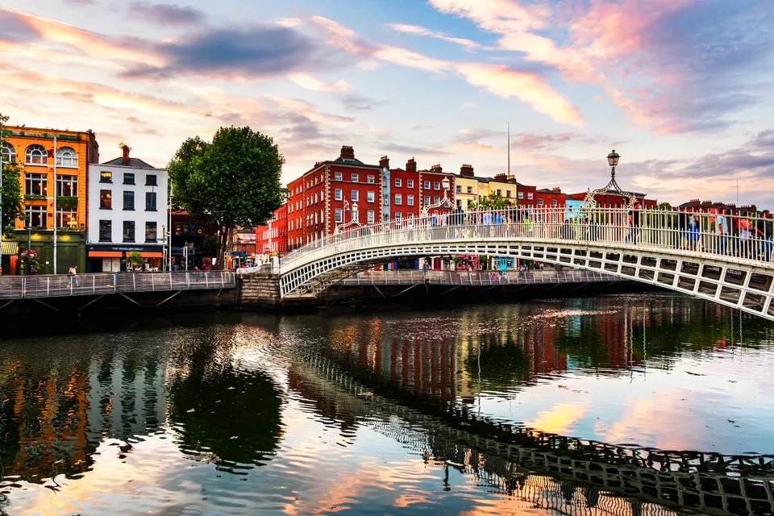
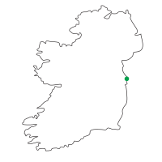
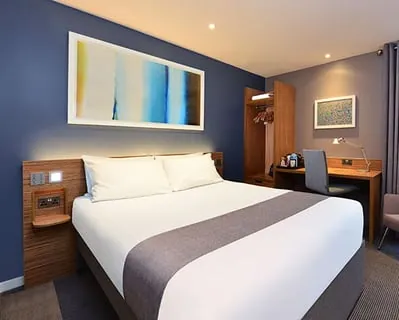
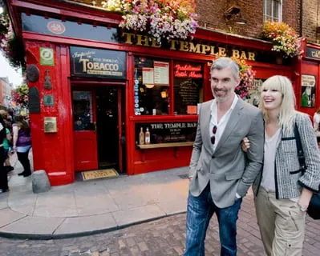
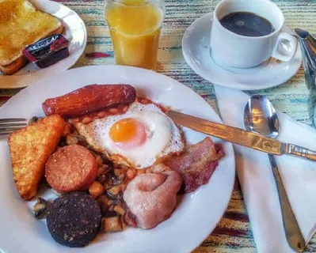
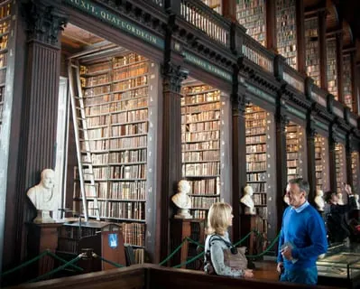
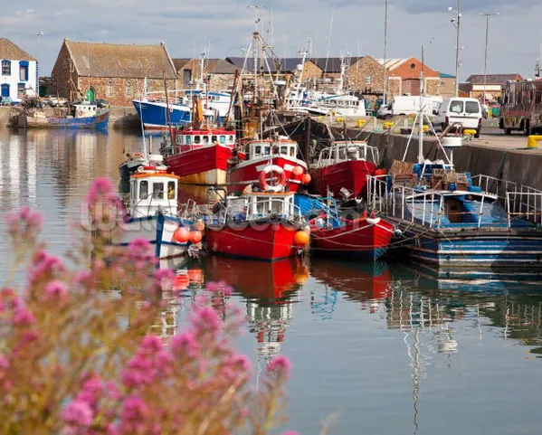
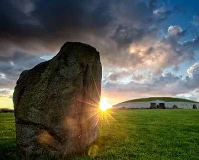

3 Jours
DUBLIN CITY BREAK
Les + du circuits
Transferts avec un Guide
Hôtel 3 étoiles dans le centre ville de Dublin
Petits Déjeuners Irlandais complets & Dîners 3 plats
Hôtel 3 étoiles dans le centre ville de Dublin
Petits Déjeuners Irlandais complets & Dîners 3 plats

3 Jours City Break – Dublin
Dublin City Centre Break
Hôtel 3/4 étoiles dans le centre ville de Dublin. Trinity College, le Château de Dublin, le Convention Centre, 3 Arena et Grafton Street pour un peu de shopping, sont des activités faisables à pied!

Hôtel en Centre Ville de Dublin

Découvrez le quartier de Temple Bar

Petits Déjeuners Irlandais complets
La Cathédrale St. Patrick

Trinity & Bibliothèque Book of Kells
Visite de la Guinness Storehouse

Explorer Howth, un ancien village de pêcheurs

Le Site de Newgrange
Qu'est-ce qui est inclus dans cette visite?
La Visite Comprend
2 nuits en hôtel 3*/4*
Transferts avec un Guide
Demi-pension
2x Petits-déjeuners Irlandais Complets
Dîners 3 plats
30+ Visites Inspirantes
Obtenir une copie de la brochure complète

…
Vous cherchez quelque chose sur mesure?
Contactez notre service commercial et nous travaillerons ensemble pour concevoir une visite
dont votre groupe se souviendra toujours.
Nous Contacter
Bureau de Dublin
Pour M.I.C.E, Rugby, F.I.T de Luxe, Équitation et Intérêts Spécifiques
Appel: +353 181 20 200
Email: mice@jorireland.com
Pour M.I.C.E, Rugby, F.I.T de Luxe, Équitation et Intérêts Spécifiques
Appel: +353 181 20 200
Email: mice@jorireland.com
Bureau de Cork
Pour les circuits de groupe,
Golf, et A.R.T.I
Appel: +353 214 385 700
Email: sales@jorireland.com
Pour les circuits de groupe,
Golf, et A.R.T.I
Appel: +353 214 385 700
Email: sales@jorireland.com
Bureau Français
Maude Breteau, Directrice Commerciale,
Marchés francophones
Appel: +336 3202 1000
Email: mbreteau@jorireland.com
Maude Breteau, Directrice Commerciale,
Marchés francophones
Appel: +336 3202 1000
Email: mbreteau@jorireland.com
Bureau Nord-Américain
Sean Reilly, directeur des ventes,
Amérique du Nord
Appel: +1 913 706 0784
Email: sreilly@jorireland.com
Sean Reilly, directeur des ventes,
Amérique du Nord
Appel: +1 913 706 0784
Email: sreilly@jorireland.com
Adresse:
Block A,
Santry Business Park,
Airport Road,
Dublin 9, D09 P5F8
Block A,
Santry Business Park,
Airport Road,
Dublin 9, D09 P5F8
Adresse:
River House,
Blackpool Retail Park,
Cork, T23R5TF
River House,
Blackpool Retail Park,
Cork, T23R5TF